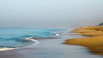
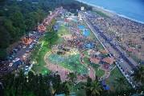
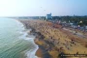
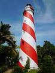
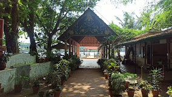
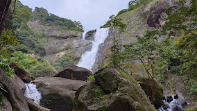

Kollam is a city in the state of Kerala, on India's Malabar Coast. It’s known as a trade hub and for its beaches, like lively Kollam and secluded Thirumullavaram. Sardar Vallabhbhai Patel Police Museum has artifacts tracing the history of the police force. Nearby, Ashtamudi Lake is a gateway to the Kerala backwaters, a network of waterways rich with vegetation. The striped 1902 Tangasseri Lighthouse has ocean view
KOLLAM BEACH



Kollam Beach, also known as Mahatma Gandhi Beach, is a beach at Kollam city in the Indian state of Kerala. Kollam Beach is the first 'Beach Wedding Destination' in Kerala.
Tangasseri Lighthouse

Tangasseri Lighthouse or Thangassery Lighthouse is situated at Tangasseri in Kollam city of the Indian state of Kerala. It is one of the two lighthouses in the Kollam Metropolitan Area and is maintained by the Cochin Directorate General of Lighthouses and Lightships.
Lighthouse
Adventure Park Kollam

Asramam Adventure Park is an urban park in the core Kollam city of Kerala state. It was opened after 1980, on 48 acres of city-owned land. Located beside the Kerala's pride, backwaters of Ashtamudi, this place popularly known as Asramam Picnic Village. It is the main centre of recreational activities in Kollam city.
Palaruvi Waterfalls

Palaruvi Falls is a waterfall located in Kollam district in the Indian state of Kerala. It is the 32nd highest waterfall in India. Palaruvi falls from a height of 300 feet and is situated at Aryankavu in the Kollam district of the south Indian state of Kerala